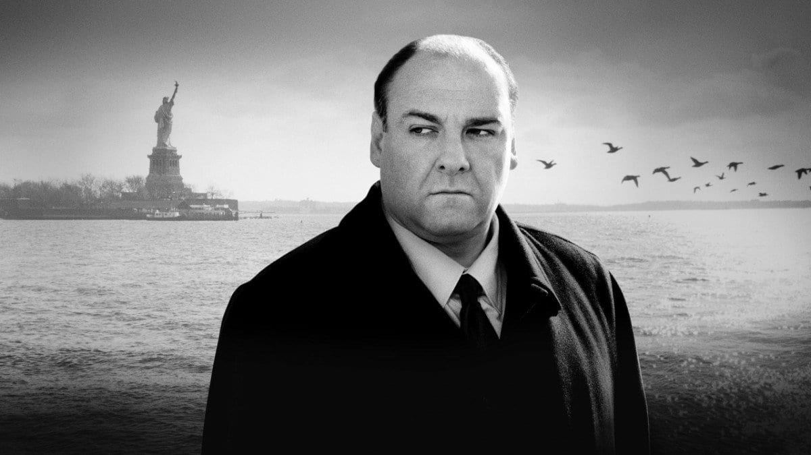

About Me
Joey Griffin onMy name is Joseph Griffin. I am a junior at Michigan State University studying Media and Information, with a focus in media management. I live in East Lansing, less than a mile away from the beautiful campus that I call home, MSU. I enjoy learning about computers, building pcs, playing video games, reading, and partying with friends. Throughout my time at college, I've learned how valuable time is, and to spend it doing things you love. I believe that to fully enjoy and experience college, you need to make friends and try new things, despite if you are unsure about something, or if it scares you. Many of the fun new things I've done at college, came from experiences that I wasn't sure about at first, but in the end, I was glad I did it.
One of my favorite things to do and pasttimes is watching movies and tv shows. I mainly enjoy thrillers, neo-westerns, dramas, and action films and shows. Some of my favorite movies include: Taxi Driver, Enemy, Apocalypse Now, The Dark Knight, Goodfellas, and Pulp Fiction. Some of my favorite tv-shows include: The Sopranos, Breaking Bad, True Detective, and Game of Thrones.
